多线程编程
1.进程与线程
并发与并行
- 并发：在单核CPU上，一段时间内宏观上有多个程序同时运行，微观上这些程序是分时的交替运行
- 并行：指两个或多个事件在多核CPU上同一时刻发生（同时发生）。
 在操作系统中，安装并发指的是在一段时间内宏观上有多个程序同时运行，这在单 CPU 系统中，每一时刻只能有一道程序执行，即微观上这些程序是分时的交替运行，只不过是给人的感觉是同时运行，那是因为分时交替运行的时间是非常短的。
在操作系统中，安装并发指的是在一段时间内宏观上有多个程序同时运行，这在单 CPU 系统中，每一时刻只能有一道程序执行，即微观上这些程序是分时的交替运行，只不过是给人的感觉是同时运行，那是因为分时交替运行的时间是非常短的。
而在多个 CPU 系统中，则这些可以并发执行的程序便可以分配到多个处理器上，实现多任务并行执行，即利用每个处理器来处理一个可以并发执行的程序，这样多个程序便可以同时执行。目前电脑市场上说的多核 CPU，便是多核处理器，核越多，并行处理的程序越多，能大大的提高电脑运行的效率。
注意：单核处理器的计算机肯定是不能并行的处理多个任务的，只能是多个任务在单个CPU上并发运行。
线程与进程
- 进程：当一个程序被运行，从磁盘加载这个程序的代码至内存，这时就开启了一个进程
- 每个进程都有一个独立的内存空间
- 一个应用程序可以同时运行多个进程
- 进程也是程序的一次执行过程，是系统运行程序的基本单位；
- 系统运行一个程序即是一个进程从创建、运行到消亡的过程。
- 线程：线程是进程中的一个执行单元，负责当前进程中程序的执行
- 关系：一个进程中至少有一个线程。一个进程中是可以有多个线程的，这个应用程序也可以称之为多线程程序。
- 对比
- 进程拥有共享的资源，如内存空间等，供其内部的线程共享
- 进程间通信较为复杂
- 同一台计算机的进程通信称为IPC (Inter- process communication)
- 不同计算机之间的进程通信，需要通过网络，并遵守共同的协议，例如HTTP
- 线程通信相对简单，因为它们共享进程的内存，一个例子是多个线程可以访问同一个共享变量
- 线程更轻量，线程上下文切换成本一般上要比进程上下文切换低
- 一个程序运行后至少有一个进程，一个进程中可以包含多个线程
线程调度
分时调度
所有线程轮流使用 CPU 的使用权，平均分配每个线程占用 CPU 的时间。
抢占式调度
优先让优先级高的线程使用 CPU，如果线程的优先级相同，那么会随机选择一个(线程随机性)，Java使用的为抢占式调度。
2.Java 线程
2.1Thread类
- 构造方法
public Thread():分配一个新的线程对象。public Thread(String name):分配一个指定名字的新的线程对象。public Thread(Runnable target):分配一个带有指定目标新的线程对象。public Thread(Runnable target,String name):分配一个带有指定目标新的线程对象并指定名字。
- 常用方法：
public String getName():获取当前线程名称。public void start():导致此线程开始执行; Java虚拟机调用此线程的run方法。public void run():此线程要执行的任务在此处定义代码。public static void sleep(long millis):使当前正在执行的线程以指定的毫秒数暂停（暂时停止执行）。public static Thread currentThread():返回对当前正在执行的线程对象的引用。
| 方法名 | 静态 | 功能说明 | 注意 |
|---|---|---|---|
| start() | 启动一个新线程，在新的线程运行 run 方法中的代码 | start 方法只是让线程进入就绪，里面代码不一定立刻运行（CPU 的时间片还没分给它）。每个线程对象的start方法只能调用一次，如果调用了多次会出现 IllegalThreadStateException | |
| run() | 新线程启动后会调用的方法 | 如果在构造 Thread 对象时传递了 Runnable 参数，则线程启动后会调用 Runnable 中的 run 方法，否则默认不执行任何操作。但可以创建 Thread 的子类对象，来覆盖默认行为 | |
| join() | 等待线程运行结束 | ||
| join(long n) | 等待线程运行结束 | 最多等待 n 毫秒 | |
| getId() | 获取线程长整型的 id | id 唯一 | |
| getName() | 获取线程名 | ||
| setName(String) | 修改线程名 | ||
| getPriority() | 获取线程优先级 | java中规定线程优先级是1~10 的整数 | |
| setPriority(int) | 修改线程优先级 | 较大的优先级能提高该线程被 CPU 调度的机率 | |
| getState() | 获取线程状态 | Java 中线程状态是用 6 个枚举表示，分别为： NEW, RUNNABLE, BLOCKED, WAITING, TIMED_WAITING, TERMINATED | |
| isInterrupted() | 判断当前线程是否被打断 | 不会清除打断标记 |
|
| isAlive() | 线程是否存活（还没有运行完毕） | ||
| interrupt() | 打断线程 | ①被打断线程正在阻塞会导致被打断的线程抛出 InterruptedException，并清除打断标记；②被打断线程正在运行，则会设置打断标记 ；③park 的线程被打断，也会设置打断标记 | |
| interrupted() | ✔ | 判断当前线程是否被打断 | 会清除打断标记 |
| currentThread() | ✔ | 获取当前正在执 行的线程 | |
| sleep(long n) | ✔ | 让当前执行的线程休眠n毫秒， 休眠时让出 cpu 的时间片给其它线程 | |
| yield() | ✔ | 提示线程调度器让出当前线程对 CPU的使用 | 主要是为了测试和调试 |
| currentThread() | ✔ | 获取当前正在执行的线程 |
2.1.1创建线程
线程start()进入就绪状态，由CPU调度执行
1
2
3
4
5
6
7
8
9
10
11
12
13
14
15
16
17
18
19
20
21
22
23
24
25
26
27
28
29
30
31
32
33
34
35
36
37
38
39
40
41
42
43
44
45
46
47
48
49
50
51
52
53
54
55
56
57
58
59
60
61
62
63
64
65
66
67
68
69
70
71
72
73
74
75
76
77
78========================================
//继承Thread类
class MyThread extends Thread
{
//定义指定线程名称的构造方法
public MyThread(String name) {
//调用父类的String参数的构造方法，指定线程的名称
super(name);
}
public void run() {
// 重写run方法，完成该线程执行的逻辑
}
}
========================================
//实现Runnable接口
class MyThread implements Runnable
{
public void run() {
//....
}
}
class Main
{
public static void main (String[] args) {
Thread myThread = new Thread(new MyThread());
myThread.start();
}
}
========================================
//实现Callable接口
class A implements Callable<boolean>{
// 泛型为返回值类型
public boolean call() throws Exception {
//...
return false;
}
}
public static void main (String[] args) throws Exception{
A a = new A();
A b = new A();
//创建执行服务
ExecutorService ser = Executors.newFixedThreadPool(3);
//提交执行
Future<Boolean> submit = ser.submit(a);
Future<Boolean> submit1 = ser.submit(b);
//获取结果
Boolean result = submit.get();
Boolean result1 = submit1.get();
//关闭服务
ser.shutdownNow();
}
========================================
//FutureTask能够接收Callable 类型的参数，用来处理有返回结果的情况
//public class FutureTask<V> implements RunnableFuture<V>
//public interface RunnableFuture<V> extends Runnable, Future<V>[返回结果]
/** 对比Runnable 可以抛出异常 可以有返回值
@FunctionalInterface
public interface Callable<V> {
V call() throws Exception;
}
*/
FutureTask<Integer> task = new FutureTask<>(new Callable<Integer>() {
public Integer call() throws Exception {
System.out.println("start");
Thread.sleep(1000);
System.out.println("end");
return null;
}
});
Thread t1 = new Thread(task,"t1");
t1.start();
task.get(); //阻塞等待线程返回结果
System.out.println("阻塞等待结果");实现Runnable接口比继承Thread类的优势
- 避免了单继承的局限
- 适合多个相同代码线程处理同一资源
- 增强了程序的扩展性，降低程序的耦合性。将实现Runnable接口的方式，把用来设置线程任务【实现类中,重写了run方法】和开启新线程【创建Thread类对象,调用start方法】进行了分离
- 用Runnable更容易与线程池等高级API配合
run方法原理
1 | //Thread.java |
实现Callable接口比实现Runnable接口的优势
Runnable接口中run()方法无法返回操作结果，java.util.concurrent.Callable接口可以指定泛型返回类型Callable的run方法可以抛出异常
2.1.2线程休眠
存在异常InterruptedException
sleep时间到达后进入线程的就绪状态
每个对象都有一个锁，sleep不会释放锁
interrupt()方法打断时会清除打断标记java.util.concurrent.TimeUnit.SECONDS.sleep(i);代替 Thread 的 sleep 来获得更好的可读性1
Thread.sleep(1000);
小应用——防止CPU占用100%
1 | /* |
2.1.3线程礼让
- 将线程从运行状态转换为就绪状态，重新竞争，存在礼让失败的可能
1 | class B implements Runnable |
sleep 与 yield
sleep
- 调用 sleep 会让当前线程从 Running 进入 Timed Waiting 状态（阻塞）
- 其它线程可以使用
interrupt方法打断正在睡眠的线程，这时 sleep 方法会抛出InterruptedException，并清除打断标记；
1 | public static void main(String[] args) throws InterruptedException { |
- 睡眠结束后的线程未必会立刻得到执行，不一定立刻获取让出的CPU使用权
- 建议用
TimeUnit.SECONDS.sleep();的 sleep 代替 Thread 的 sleep 来获得更好的可读性
yield
- 调用 yield 会让当前线程从 Running 进入 Runnable 就绪状态，然后调度执行其它线程
- 具体的实现依赖于操作系统的任务调度器【没有礼让出去】
2.1.4合并线程
等待此线程执行完后，再执行其他线程
1
2
3
4
5
6
7
8
9
10
11
12
13
14
15
16
17static int r = 0;
public static void main(String[] args) throws InterruptedException {
test1();
}
private static void test1() throws InterruptedException {
log.debug("开始");
Thread t1 = new Thread(() -> {
log.debug("开始");
sleep(1); //1s
log.debug("结束");
r = 10;
});
t1.start();
// t1.join();
log.debug("结果为:{}", r);
log.debug("结束");
}前

后

2.1.5线程打断
打断阻塞状态的线程
sleep，wait，join方法都会让线程进入阻塞状态，打断的线程, 会清空打断状态为【false】（已经有了异常捕获过程了）
1
2
3
4
5
6
7
8
9public static void main(String[] args) {
Thread t1 = new Thread(() -> {log.debug("s1eep...");
sleep(5);},"t1");
t1.start();
Thread.sleep(1000);
Log.debug("interrupt");
t1.interrupt();
Log.debug("打断标记:{}", t1.isInterrupted());
}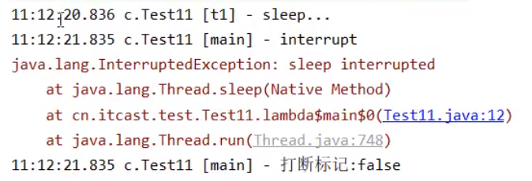
1
2
3
4
5
6
7
8
9
10
11
12
13
14
15
16
17
18
19
20
21final static Object Lock = new Object();
static boolean run = false;
public static void main(String[] args) throws InterruptedException {
Thread t1 = new Thread(() ->
{
synchronized (Lock){
log.debug("wait...");
try {
Lock.wait();
} catch (InterruptedException e) {
e.printStackTrace();
log.debug("打断标记:{}", Thread.currentThread().isInterrupted());
}
}
},"t1");
t1.start();
Sleeper.sleep(1);
log.debug("interrupt");
t1.interrupt();
}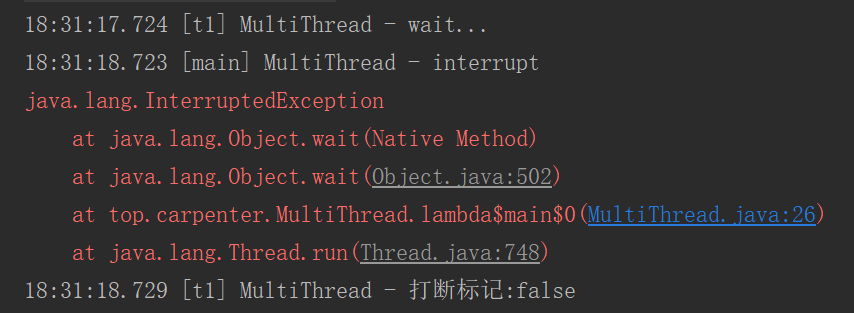
打断正常运行的线程
打断正常运行的线程，线程知道有其他线程想打断我，不会影响线程的正常运行过程，不会清空打断状态
线程不会被强制的停止，可以完成一定的善后工作再退出
1
2
3
4
5
6
7
8
9
10
11
12
13
14
15
16public static void main(String[] args) {
Thread t2 = new Thread(()->{
while(true) {
Thread current = Thread.currentThread();
boolean interrupted = current.isInterrupted();//获取打断标记查看是否被打断
if(interrupted) {
log.debug("打断状态: {}", interrupted);
break;
}
}
}, "t2");
t2.start();
sleep(0.5);
t2.interrupt();
}
//20:57:37.964 [t2] c.TestInterrupt - 打断状态: true
打断 park 线程
打断 park 线程，不会清空打断状态
如果打断标记已经是 true, 则 park 会失效
1
2
3
4
5
6
7
8
9
10
11
12
13public static void main(String[] args) throws InterruptedException {
Thread t1 = new Thread(() -> {
log.debug("park...");
LockSupport.park();// ①
log.debug("unpark...");
log.debug("打断状态：{}",Thread.currentThread().interrupted()); //不会清空打断状态
LockSupport.park(); // park 会失效
log.debug("unpark");
}, "t1");
t1.start();
sleep(0.5);
//t1.interrupt(); 没有此行①之后的线程不执行了
}
2.1.6停止线程
- 当run方法完成后线程终止
- 【不推荐】使用stop方法，destroy方法
- 在一个线程 T1 中如何“优雅”终止线程 T2？这里的【优雅】指的是给 T2 一个料理后事的机会。
两阶段终止模式
优雅（给与线程了解后事的机会）地停止某个(例如：监视记录)线程
1
2
3
4
5
6
7
8
9
10
11
12
13
14
15
16
17
18
19
20
21
22
23
24
25
26
27
28
29
30
31
32
33
34
35
36
37
38
39
40
41
42
43
44
45
46
47
48
49
50
51
52
53
54
55public class MultiThread {
public static void main(String[] args) throws Exception {
MonitorThread monitorThread = new MonitorThread();
System.out.println(Thread.currentThread().getName()+"开始监控");
monitorThread.start();
Thread.sleep(5000);
System.out.println(Thread.currentThread().getName()+"停止监控");
monitorThread.stop();
}
}
class MonitorThread{
private Thread monitor;
/*private volatile boolean stop = false;*/
//启动监控线程
public void start() {
monitor = new Thread(() -> {
while (true) {
Thread current = Thread.currentThread();
/*优化替代if (stop) { */
if (current.isInterrupted()) { //是否被打断
System.out.println(Thread.currentThread().getName()+"料理后事");
break;
}
try {
Thread.sleep(1000);
System.out.println(Thread.currentThread().getName()+"执行监控记录");
} catch (InterruptedException e) {
//如果因为sleep出现异常后，会清除打断标记
//需要重置打断标记
current.interrupt();/*优化不要此行*/
}
}
}, "monitor");
monitor.start();
}
//停止监控线程
public void stop() {
/*优化添加 stop = true; */
monitor.interrupt();
}
}
/*
main开始监控
monitor执行监控记录
monitor执行监控记录
monitor执行监控记录
monitor执行监控记录
monitor执行监控记录
main停止监控
monitor料理后事
*/
2.1.7不推荐的方法
还有一些不推荐使用的方法，这些方法已过时，容易破坏同步代码块，造成线程死锁

stop方法会真正的杀死线程 如果锁住了共享资源 那么当杀死后就没有机会释放锁 其他线程永远无法获取到锁
2.2查看进程线程的方法
Windows查看所有进程
1
tasklist
java查看所有Java进程
1
jps
查看某个 Java 进程（PID）的所有线程状态
1
jstack [PID]
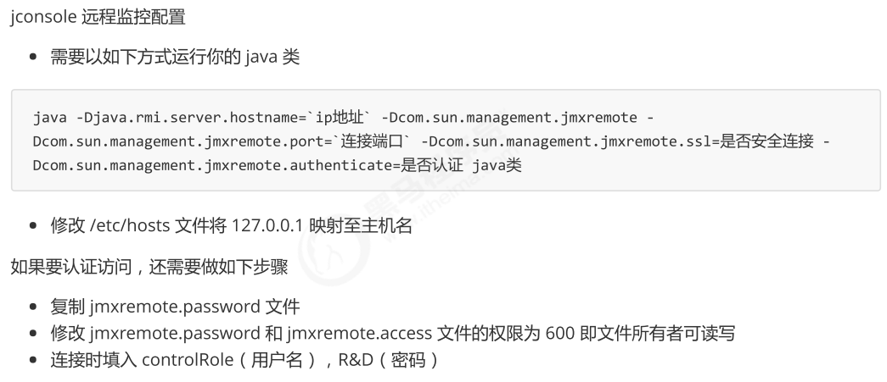
2.3操作系统线程状态
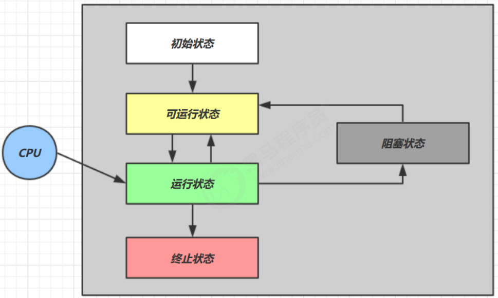
- 【初始状态】仅是在语言层面创建了线程对象，还未与操作系统线程关联
- 【可运行状态】（就绪状态）指该线程已经被创建（与操作系统线程关联），可以由 CPU 调度执行
- 【运行状态】指获取了 CPU 时间片运行中的状态
- 当 CPU 时间片用完，会从【运行状态】转换至【可运行状态】，会导致线程的上下文切换
- 【阻塞状态】
- 如果调用了阻塞 API，如 BIO 读写文件，这时该线程实际不会用到 CPU，会导致线程上下文切换，进入 【阻塞状态】
- 等 BIO 操作完毕，会由操作系统唤醒阻塞的线程，转换至【可运行状态】
- 与【可运行状态】的区别是，对【阻塞状态】的线程来说只要它们一直不唤醒，调度器就一直不会考虑调度它们
- 【终止状态】表示线程已经执行完毕，生命周期已经结束，不会再转换为其它状态
2.4Java中定义的线程状态
- 依据：Thread.State枚举分为六种状态
NEW：创建Java线程对象，但是没有与OS线程相关联RUNNABLE：JVM中执行的线程，【包括运行线程，就绪线程和阻塞线程（阻塞IO相关API）】- Object.notify()方法【竞锁成功】
- Object.notifyAll()方法【竞锁成功】
- thread.interruput方法【竞锁成功】
- LockSupport.unpark(“thread”)方法
- 阻塞IO操作
WAITING：无限期等待状态，等待被其他线程显示调用【Java API 层面对阻塞状态细分】- 没有设置Timeout参数的Object.wait()方法
- 没有设置Timeout参数的Thread.join()方法
- LockSupport.park()方法
TIMED_WAITING：限期等待状态，一定时间后系统自动唤醒【Java API 层面对阻塞状态细分】- Thread.sleep()
- 设置Timeout参数的Object.wait()方法
- 设置Timeout参数的Thread.join()方法
- 设置Timeout参数的LockSupport.parkNanos()方法
- 设置Timeout参数的LockSupport.parkUntil()方法
BLOCKED：阻塞状态，线程等待获取一个排他锁，即线程等待进入同步区【Java API 层面对阻塞状态细分】- Object.notify()方法【竞锁失败】
- Object.notifyAll()方法【竞锁失败】
- thread.interruput()方法【竞锁失败】
TERMINATED：线程执行完成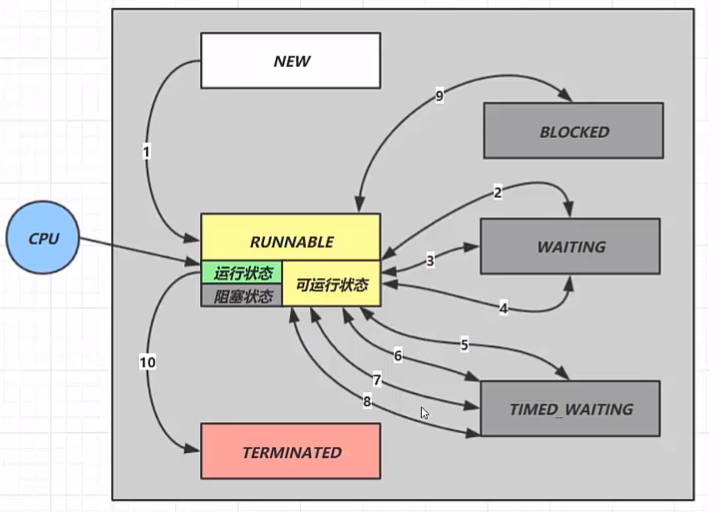
1 | import lombok.extern.slf4j.Slf4j; |
2.5线程运行原理
Java Virtual Machine Stacks（Java 虚拟机栈）- 每个线程启动后，虚拟机就会为线程分配一块栈内存。
- 每个栈由多个栈帧（Frame）组成，对应着每次方法调用时所占用的内存
- 每个线程只能有一个活动栈帧，对应着当前正在执行的那个方法
1 | public class Demo { |
进行类加载
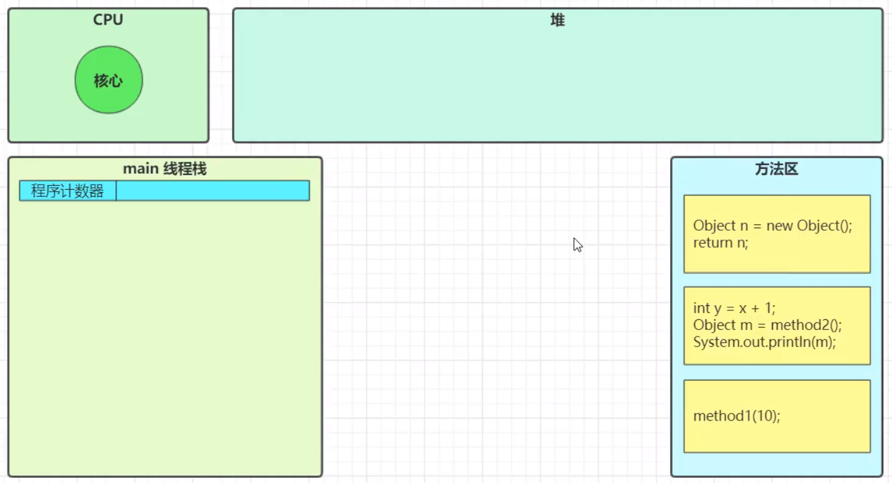
启动main线程
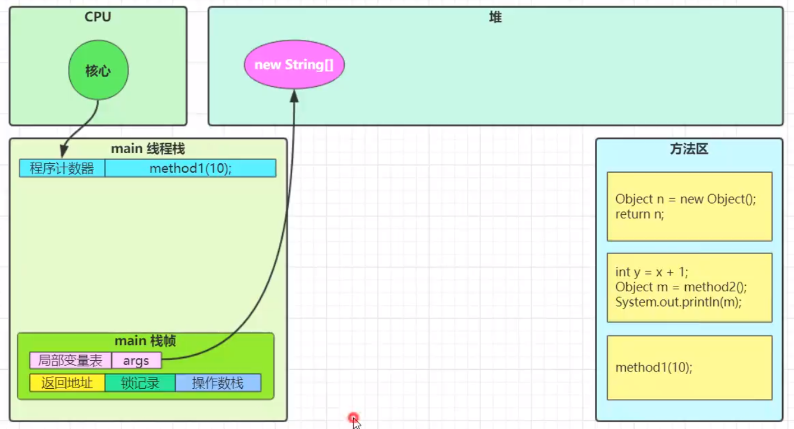
分配栈帧内存，调用method1方法
开始方法调用 x=10
程序计数器读取下一行代码，执行
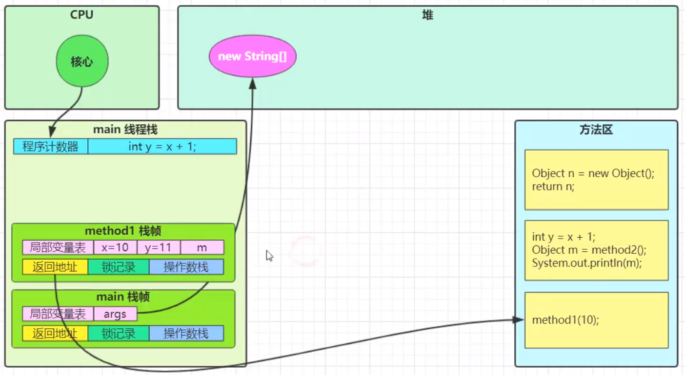
程序计数器读取下一行代码
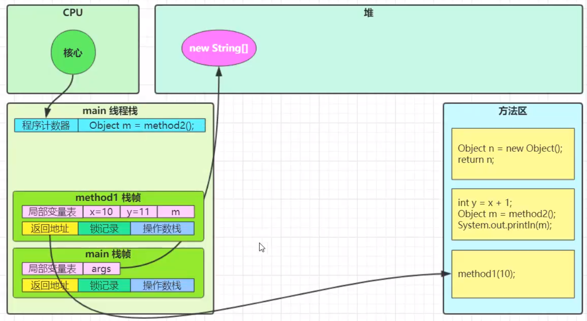
准备好栈帧
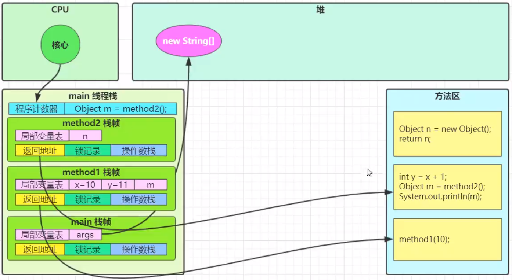
执行method2方法
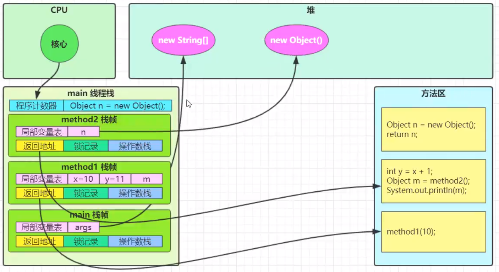
mothed2执行结束，结果返回给调用者，释放内存
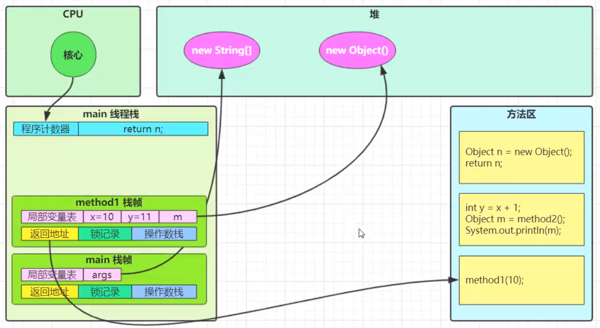
继续执行下一行代码
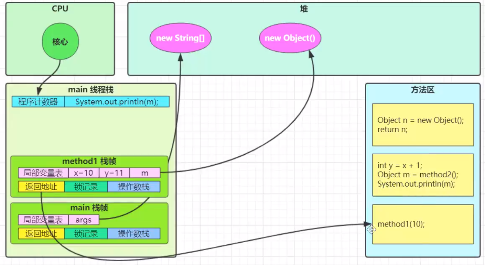
执行结束，返回结果，释放栈帧内存
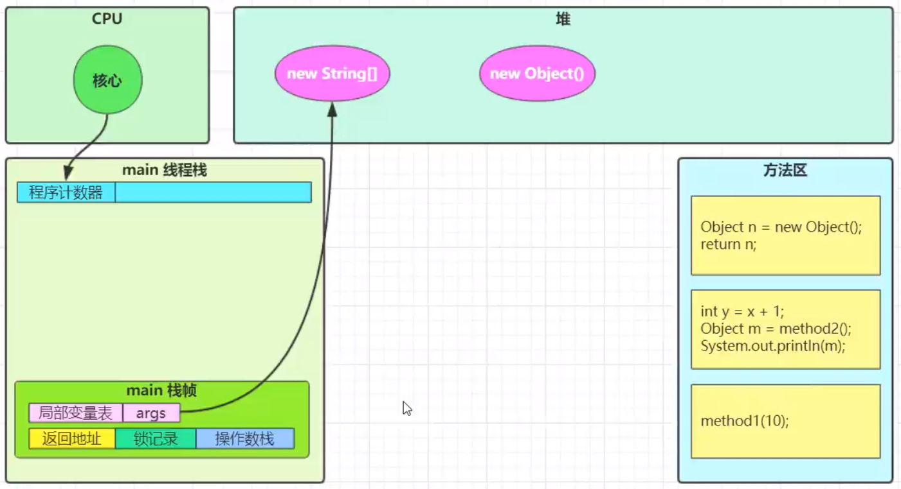
主方法也没有方法了，运行结束
2.6线程上下文切换（Thread Context Switch）
- 因为以下一些原因导致
cpu不再执行当前的线程，转而执行另一个线程的代码- 线程的 cpu 时间片用完
- 垃圾回收
- 有更高优先级的线程需要运行
- 线程自己调用了
sleep、yield、wait、join、park、synchronized、lock等方法
- 当
Context Switch发生时，需要由操作系统保存当前线程的状态，并恢复另一个线程的状态。其中，Java 中对应的概念就是程序计数器（Program Counter Register），它的作用是记住下一条 jvm指令的执行地址，是线程私有的- 当前线程的状态包括程序计数器、虚拟机栈中每个栈帧的信息，如局部变量、操作数栈、返回地址等
- Context Switch 频繁发生会影响性能
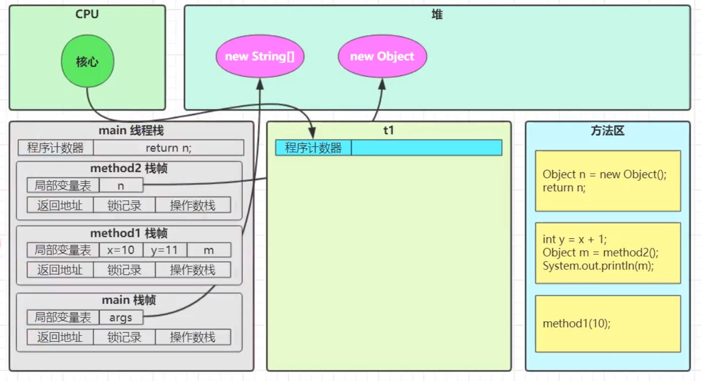
灰色区域都要保存下来
2.7线程优先级
- 优先级低仅代表获得调度的概率低
- 设置优先级应该在start()方法前
- 默认的优先级为5【MIN_PRIORITY = 1 MAX_PRIORITY = 10】
- 线程优先级会提示（hint）调度器优先调度该线程，但它仅仅是一个提示，调度器可以忽略它
- 如果 cpu 比较忙，那么优先级高的线程会获得更多的时间片，但 cpu 闲时，优先级几乎没作用
1 | class B implements Runnable |
原文作者: 掘金木匠
原文链接: http://goldcarpenter.github.io/2019/04/01/多线程_Part1/
版权声明: 转载请注明出处(必须保留作者署名及链接)